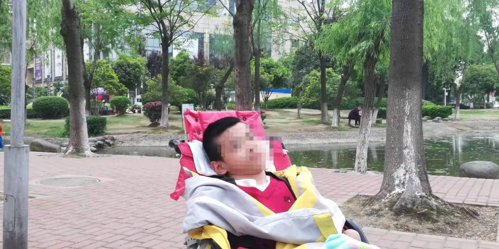
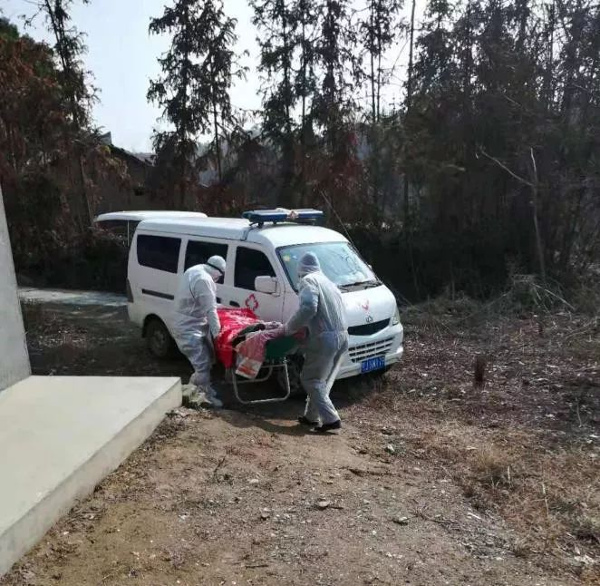

湖北脑瘫儿之死：多方曾介入救助 父亲被隔离时想带其入院
原文链接 备份链接 **作者|梁耀丹 ** 1月23日，疑似感染新冠病毒肺炎的鄢小文被带走隔离时，未曾想到这竟是与17岁的脑瘫儿子鄢成的最后一次见面。 鄢小文放心不下独自在家、生活无法自理的鄢成，于是向外界求助。接下来一周的时间里，历经 …

1月29日中午，湖北黄冈17岁脑瘫儿鄢成死了。晚上，他死亡的消息登上了微博热搜，引发全国关注。
同一天，因新型冠状病毒肺炎死亡的中国病例已经累计170例，共有7711人被确诊。疑似病例达12167例。
鄢成的单身父亲鄢小文正是这场瘟疫的疑似病例之一，并因此和患有自闭症的二子小伟被隔离在医院里治疗6天。这6天，相依为命的父子失去了联系，四肢瘫痪的鄢成被单独留在家中，度过了他人生最孤独的最后6天。
期间，1月26日，发烧的鄢成曾被送到医院，检查后却又被送回家中。最终，
1月29日上午，在多方奔走呼吁下，镇长带队把鄢成送去了集中安置点。但两个小时后，父亲鄢小文接到了儿子的死讯。
就在死前一天，被隔离在医院病房的鄢小文和他的朋友们，多次拨打红安县120和110，求他们尽快收治鄢成入院，但都无结果。

图为生前的鄢成
单亲爸爸发烧就医后被隔离
死者鄢成，家住湖北红安县华家河镇鄢家村。他患有脑瘫，四肢瘫痪、有智力障碍，不会说话行走，生活无法自理。他还有一个10岁的弟弟，患有中度自闭症。
父亲鄢小文早年在食堂工作，妻子于2010年因不堪生活重负自杀后，鄢小文为了照顾孩子，辞掉工作，一家三口靠政府低保和他人救济为生，平时常住在武汉汉口的公益组织“蜗牛家园”。
1月17日，鄢小文带着两个孩子从汉口回到老家鄢家村。3天后，鄢小文就出现了发热症状，开始去医院打吊瓶。1月22日，在华家河镇卫生院就诊的鄢小文被认为怀疑新冠肺炎，需要留院隔离观察。
第二天上午，鄢小文被卫生院的车接走一去不返，同行的小儿子小伟虽无症状，也按“密切接触者”隔离规定，被留在同一个病房接受观察，但由于哥哥鄢成没有自主行动能力，加上没有异常症状，卫生院床位紧张等情况，因此被独自留在家中隔离。
隔离中的鄢小文很焦灼鄢成的状况，打电话求二姐鄢继荣去照顾鄢成。同时，鄢小文还把情况，告知了“蜗牛家园”负责人朱文沁，后者又通过家长组织渠道向湖北省残联汇报。
据红安县华家河镇官方后来提供的情况说明显示：鄢小文在入院后，曾打电话向村干部鄢东华求助，鄢东华则建议鄢小文先找自家的亲戚照料鄢成。
除夕，两个照顾鄢成的人
1月24日，鄢小文在医院被隔离的第二天，鄢小文和鄢小伟被转移到了红安县定点的隔离场所杏花乡卫生院。
这一天，待在家里的鄢成吃了两顿饭。一顿是二姑鄢继荣喂的，一顿是镇卫生院一位名叫金辉的工作人员喂的。
这一天，鄢家村村委会主任陈敬友、村副职干部鄢东华、刘金洲等村干部、村医熊天明、二姑鄢继荣，都陆续来看过鄢成。
据鄢继荣向大米和小米介绍，她当时给鄢成喂了一顿饭，还换了尿不湿。
据镇政府提供的情况说明，当时村干部一行探视鄢成时，带着橘子、饼干等食物，还为他测量体温，37摄氏度。

第二天，大年初一，鄢继荣因身体不适，没再去照顾侄子。鄢成的鼠年第一天有没有吃过饭，换过尿裤，成为一个谜。
据官方的情况说明，村委当时安排村医熊天明当天晚上就去照料鄢成的生活。但因为没有防护衣物，担心被感染的熊天明并未同意。
在杏花乡卫生院，一天都没有收到孩子讯息的鄢小文，反复给村委会主任陈敬友打电话。在武汉的朱文沁也继续打电话向残联求助。
鄢成发烧了
1月26日上午，朱文沁从村委会主任陈敬友处得知，鄢成有点低烧。
据官方情况说明透露，当日下午4：30，华家河镇卫生院护士向花荣曾去给鄢成喂食、测体温。下午6时左右，镇卫生工作人员向上级反映鄢成体温偏高。
晚上9时左右，镇卫生院院长陶卫波，村主任陈敬友等人去看望鄢成，为他测量体温，发现鄢成发烧后，便立即送往镇卫生院进行量体温、验血、拍片等检查。其间，朱文沁与陈敬友两次通话了解情况，并请求将鄢成留在医院。

图为1月26日晚上鄢成在镇卫生院检查的心电图
但“镇医院根据检查结果，认为鄢成不构成留院观察的条件”，鄢小文所在的医院也因鄢成大小便不能自理、怕造成更多传染而拒绝其入院。
当晚10时左右，鄢成重新被送回家中。
就这样，鄢成错过了被医院收治的机会。
1月27日，与父亲分别后第五日，鄢成的护理问题仍未解决。
心智障碍者家长组织网络理事长戴榕将此事紧急汇报给了中国残联、湖北省各级残联、中国精协、中国智协等单位组织，并组建“援助湖北红安鄢爸”微信群，试图会同多方力量，解决鄢成的安置护理问题。
同时，据官方的情况说明显示，当天上午，华河镇镇长召集残联、民政、村委会等相关人员研究部署了鄢成的照料工作，镇卫生院负责鄢成的诊疗，村委会安排专人看护，并为看护人员申请一套防护服。县残联还为鄢成送去1000元慰问金和纸尿裤等用品。
下午，鄢小文联系陈敬友询问护理人员安排进展，陈敬友表示花钱也找不到护理人员，没有防护服风险太大。曾来照料过鄢成的二姑鄢继荣也因仍在打针，无法前去。
直到晚上7时30分，陈敬友才通知鄢小文，护理人员已找到。感到有些安心的鄢小文，在微博发出一封求助信，想为护理人员求助一套防护服。
截至当晚12时，鄢小文等人都不知道当天是否有人给鄢成喂过东西。但华家河镇政府后来出具的情况表示，当日下午，村医熊天明及其老公一起给鄢成测了体温、喂了食。
多次120，多次110
1月28日，时隔3天，二姑鄢继荣去了鄢成家。同行的是村医熊天明。因为没有足够的防护服，鄢继荣戴着口罩与橡胶手套进入屋内。
“一进来就看到鄢成头垂在床边，身上脸上都有呕吐物，被褥湿透。”鄢继荣说，鄢成看到她进来，嘴里“啊啊啊”地叫着。
在帮鄢成护理换洗的过程中，她发现鄢成身体有些凉，后来喂粥时，鄢成只吃了两口。鄢继荣感觉不对劲，随即将情况告知鄢小文。
当日下午到晚上，鄢小文、朱文沁和“蜗牛家园”另一家长暖妈，多次拨打红安县的120和110，后两者均以“不是急救病人”、“已反馈上级”、“需要村里报警”、“没有监护人”等各种理由，拒绝接鄢成入院。
暖妈也致电村主任陈敬友，请他报警求助，陈敬友给出的反馈是，“没有来，没处收。”

图为暖妈的通话截图
根据官方情况说明和鄢继荣的讲述，1月28日中午，鄢继荣给鄢成喂了一顿饭，下午3时半和晚上9时，村委会主任陈敬友两次带领护理人员上门，给鄢成喂了两杯氨基酸，因为华家河镇卫生院院长说氨基酸兑热水可以缓解鄢成的呕吐。
陈敬友在微信上，一次给暖妈发了两张照片，还有一次与暖妈视频聊天。
“这两次，我都没看到鄢成的面部表情，也没有获知他的体温和精神状况。” 暖妈说。
而华家河镇官方的情况说明显示，陈敬友等人给鄢成测量过体温，看到鄢成“状态尚可”。
这天晚上，中精协主席温洪和鄢小文同时收到消息——明日鄢成可以送到当地指定的疑似人员隔离安置点，由华家河镇医院负责安排照顾。
死于隔离点
1月29日上午11时，一直介入此事的戴榕，给大米和小米编辑发来信息，“目前孩子体温正常，已送新床单棉被纸尿裤，镇政府由镇长带头组成了照顾小组，保证每天会有人看望和照顾孩子。”
11点30分左右，华家河镇卫生院派车将鄢成接往集中观察点。转移的过程，村干部还拍照发给鄢小文。
为鄢成组织的救护微信群里，响起一片欢呼和感激声。这些为鄢成奔走6日的全国心智障碍群体热心家长们，终于迎来了曙光。“鄢成得救了。”
然而，两个半小时后，鄢小文却接到村委会的电话——鄢成死了。

根据官方的情况说明，1月29日12时30分许，医护人员发现鄢成呼吸停止、瞳孔放大、无脉搏和心跳，现场判定鄢成死亡。
直到1月31日晚，鄢小文等人仍未被告知鄢成的死因，他和其他亲属，也没有接到官方尸体解剖的通知。
官方要求尽快火化遗体
鄢成死后，鄢小文向医院和村委提出，想立即出院回来见孩子最后一面。但未获同意。
1月30日，红安县残联康复部主任刘长安、华家河镇党委书记汪宝权、华家河镇民政办张建主任，到卫生院看望鄢小文，提出希望把鄢成的尸体火化。
“他们三人穿着防护服，带着护目镜和N95口罩，表示‘这是按照国家对疫情防控的指示和规定’”。鄢小文说，他“迫于压力”，出具了一份委托书，委托鄢成的舅舅火化孩子遗体。

图为鄢小文称自己被迫签的委托书
但很快，在朋友的提醒下，鄢小文通过媒体宣布撤回这份委托书，并重新发出新的委托，希望找一个委托人，帮他做两件事情：
1.代为向医院领取鄢成的病历，调取、复制医疗记录，收取死亡证明。
2.本人自愿将鄢成的全部遗体及器官进行捐赠。若无法进行遗体捐赠，需等调查组调查结果出来后，再视情况处理。
当天下午，湖北省红安县官方融媒体中心“最红安”公众号发布最新疫情，确认鄢小文为新型冠状病毒感染的肺炎患者，并表示官方已成立调查组，调查鄢成死亡一事。
据黄冈日报报道，1月30日，黄岗市委书记刘雪荣约谈红安县等下属领导时指出，对疫情防控责任落实不力的单位和个人，要该处分的坚决处分，该撤职的坚决撤职。
1月31日，民政部相关负责人回应鄢成死亡一事时称，相关文件已提出更加明确的要求，对有成员接受隔离治疗的家庭加强关心帮扶。
儿子是死于病毒感染、还是另有原因？如果儿子被及时送来就医，是否能逃过一死？
在病房里的新型冠状病毒肺炎患者鄢小文，围绕在心中的疑惑仍然没有答案。
截至这一天，全国累计共有9692例被确诊新冠肺炎，累计死亡者达213例，共有疑似病例15238例、密切接触者102427人正在接受隔离医学观察。
-完-
采写|当当小熊春桃 编辑|孙旭阳

我是大米
她每天都在为特殊孩子家庭努力
微信扫一扫赞赏作者 赞赏
长按二维码向我转账
她每天都在为特殊孩子家庭努力
受苹果公司新规定影响，微信 iOS 版的赞赏功能被关闭，可通过二维码转账支持公众号。
文章已于修改
原文链接 备份链接 **作者|梁耀丹 ** 1月23日，疑似感染新冠病毒肺炎的鄢小文被带走隔离时，未曾想到这竟是与17岁的脑瘫儿子鄢成的最后一次见面。 鄢小文放心不下独自在家、生活无法自理的鄢成，于是向外界求助。接下来一周的时间里，历经 …
原文链接 备份链接 1月29日下午，湖北黄冈市农民鄢小文接到村委会通知，他17岁的大儿子鄢成刚刚死了。自从1月23日起，鄢小文和11岁自闭症小儿子因疫情防控被隔离，独留患有脑瘫的鄢成在家中，托付村委会照料。 从武汉返乡被隔离 鄢小文是黄冈 …
原文链接 备份链接 潜江成为疫区很多天了。之前叫隔离日记，想到几天后隔离就结束了，而疫情未必缓解。改叫疫区笔记吧。 1-28，正月初四，隔离第八日。晴。 全国新增确诊1771例，湖北1291例，其中，武汉892例。昨天日记里，我在形容武汉 …
原文链接 备份链接 播放音乐 | 阅读效果更佳 感谢 | 您对霍超LEGAL的关注、阅读与分享 昨天飞机刚刚落地，手机开机给爸妈报了平安，人们开始涌动，起来从行李架上收拾东西，飞机上的广播突然响起，”乘坐本次航班的旅客 霍超先生，因为您先 …
原文链接 备份链接 湖北是我的老家，杭州是我的家 口述/阿基米 从湖北回到杭州，我们一家三口开始14天的隔离生活。 本以为可能遭遇到歧视，结果—— 社区说：“我们会保证您的隐私，谢谢您的配合。” 物业说：“您受委屈了，谢谢您的理解。” 这 …